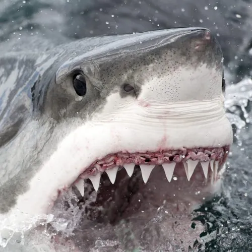

鱼类 · 动物界
大白鲨 Carcharodon carcharias

现存最大的掠食性鲨鱼之一，背灰腹白、体形流线，嗅觉与电感受器极为灵敏，是海洋食物链的顶端捕食者。
- 分类
- 门脊索动物门纲软骨鱼纲目鼠鲨目科鼠鲨科属噬人鲨属
- 栖息环境
- 温带与亚热带近岸海域、岛屿周围及大陆架水域
- 地理分布
- 全球各大洋温带和亚热带海域，地中海、日本近海亦有分布
- 保护级别
- IUCN 易危（VU）；中国国家二级保护动物
物种志
大白鲨体呈粗壮的纺锤形，吻部圆锥状，口内排列着数排三角形锯齿状牙齿，边缘锋利如刀。背部呈灰褐色或铅灰色，腹部雪白，背腹之间界线分明，这种反荫蔽配色使猎物难以发现它的接近。成鱼体长一般 4–5 m，体重 700–1000 kg，最大记录个体体长超过 6 m、体重约 2 t，是现存体型最大的掠食性鱼类之一。它的嗅觉极其灵敏，还能感知猎物肌肉收缩产生的微弱电场。
大白鲨广泛分布于全球温带和亚热带海域，常在南非、澳大利亚南部、美国加州和地中海等海豹、海狮聚集的岛屿附近活动。它是少数能局部提高体温的鲨鱼，肌肉温度可比周围海水高 5–10 ℃，因而能在较冷的水中保持敏捷。它主要捕食海豹、海狮、鱼类和其他鲨鱼，常从下方突袭猎物；繁殖为卵胎生，妊娠期约一年，每胎 2–10 尾。由于鱼翅贸易、误捕和栖息地退化，全球种群持续下降，IUCN 将其评为易危，中国于 2021 年将其列为国家二级保护动物。
形态与习性
- 食性以海豹、海狮、鱼类和其他鲨鱼为食，也食鲸类腐肉
- 体长一般 4–5 m，最大记录约 6 m
- 体重通常 700–1000 kg，大型个体可达约 2 t
- 寿命约 70 年
- 繁殖卵胎生，妊娠期约 12 个月，每胎 2–10 尾
- 体温肌肉温度可比周围海水高 5–10 ℃
趣味知识
- 大白鲨一生要更换上万颗牙齿，旧牙脱落后，后排的备用牙会像传送带一样补上。
- 它并非刻意袭击人类，多数咬人事件是它把冲浪板误认成了海豹。
- 大白鲨能潜入近 1200 m 深的海域，也会进行长距离的跨洋迁徙。
生态关系
- 捕食 → 北海狮 大白鲨捕食海狮